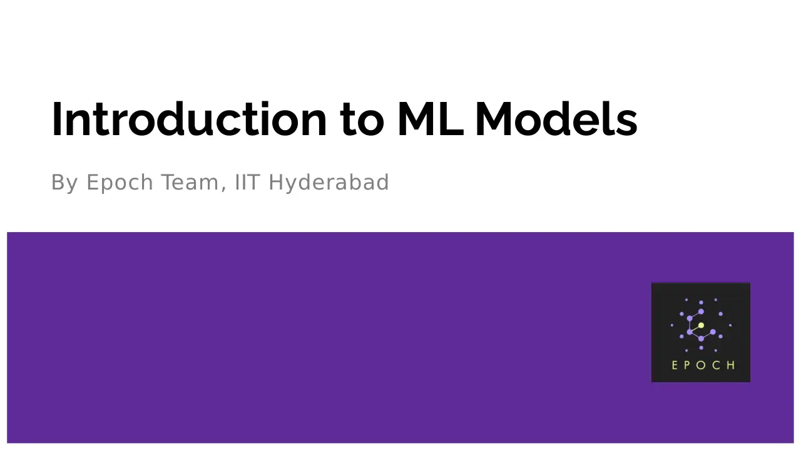

A brief introduction to modeling, a few basic terms and linear regression models, with a hands-on exercise on data collected from the audience.

Community session · Epoch, IIT Hyderabad · Aug 28, 2022
A brief introduction to modeling, a few basic terms and linear regression models, with a hands-on exercise on data collected from the audience.